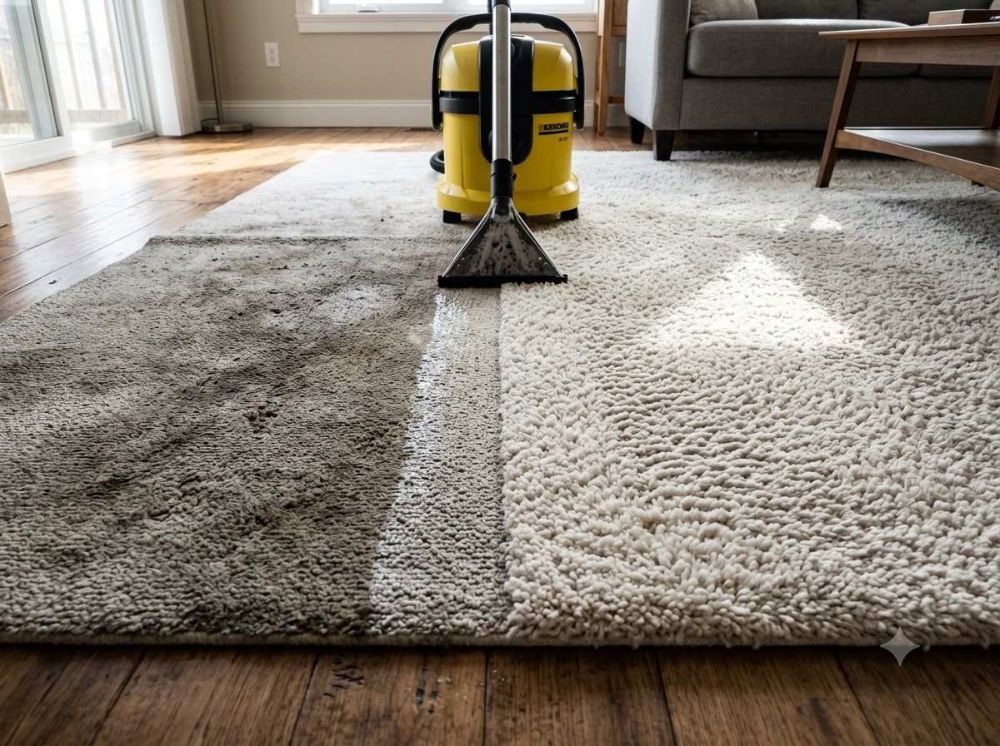

Звоните ежедневно 09:00–00:00+7 (925) 518-63-37
Заказать уборку

Выезжаем на дом с профессиональным оборудованием и выводим любые виды пятен и загрязнений: от бытовых пятен еды и напитков до следов домашних животных, плесени и застарелых загрязнений.
Не нужно везти ковёр в химчистку — приезжаем к вам с профессиональным оборудованием.
Используем гипоаллергенные составы, безопасные для детей и домашних животных.
Экстракторные и роторно-дисковые машины эффективно справляются даже с застарелыми загрязнениями.
Используем оборудование для ускоренной сушки — ковёр можно использовать уже в тот же день.
Подбираем метод чистки индивидуально под тип материала и степень загрязнения.
Стоимость известна заранее, без доплат по факту выполнения работ.
Обрабатываем весь ковёр экстракторной машиной, удаляя поверхностные и бытовые загрязнения.
Используем роторно-дисковую машину для въевшихся и застарелых загрязнений.
Сложные пятна обрабатываем вручную, подбирая специальный состав под тип загрязнения.
Финальная промывка экстрактором и сушка с помощью профессиональных растворов-отдушек.
Сама чистка занимает около 2 часов, полное высыхание ковра — до 8 часов в зависимости от материала и толщины.
| Услуга | Стоимость |
|---|---|
| Химчистка ковров / ковриков / ковролина | от 240 руб./м² |
Внимание! Цены не являются окончательными. Точную стоимость услуг уточняйте у менеджеров компании — она зависит от площади, материала и степени загрязнения.